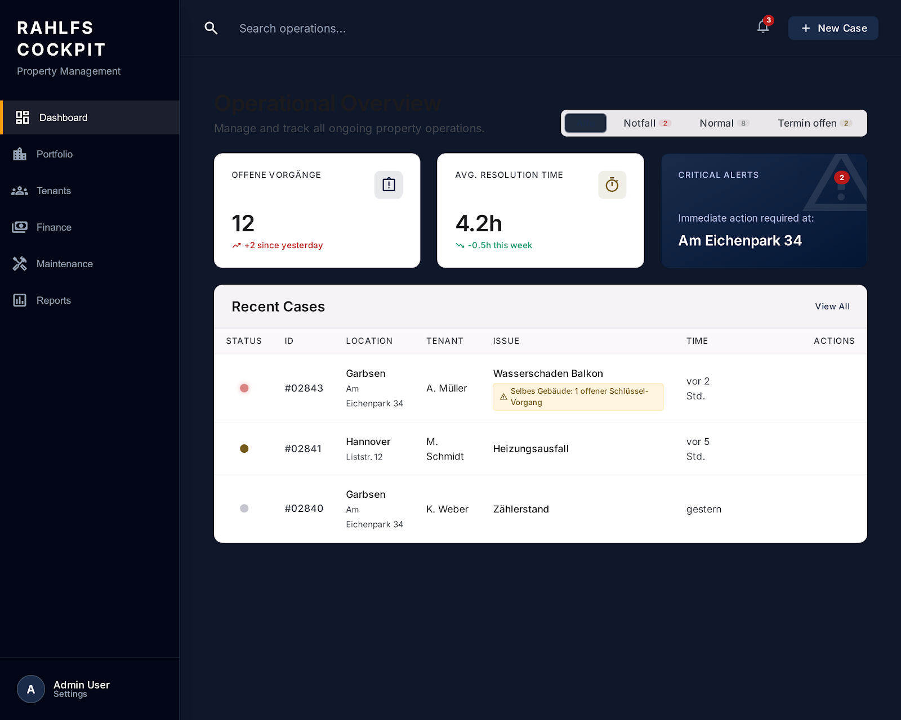

From paper intake to AI-triaged ticket — without leaving Telegram.
Three shifts converge on the German property-management desk.
of German tenants use messaging apps daily — Telegram and WhatsApp are already the default channel.
Bitkom Tenant Comms 2025
mandatory defect questions — Art, Ort, Ausmaß, Seit, Ursache — answered in fluent German by today's LLMs.
Tested in our MVP this week
Hausverwaltung headcount since 2020. The work did not shrink — the desk did.
VDIV Branchenreport 2024
Strukturieren, wo der Schaden entsteht — nicht zwei Tage später am Schreibtisch.
Structure the report at the source — not at the desk two days later. The bot asks the five right questions, in German, in the channel the tenant already uses.
Three surfaces, one structured record. The tenant never downloads anything. The manager never re-types anything.
5 mandatory questions in German, photo upload, no install. Runs on Claude.
Live-polled dashboard. Every case AI-triaged on arrival: kritisch · hoch · mittel · niedrig.
Branded A4 export, one click. Tenant info, defect, photos, recommended actions.

Every triaged case carries concrete next steps for the manager — written in the same prompt, persisted once, never re-generated.
End-to-end MVP. Python bot, FastAPI triage, React cockpit, client-side PDF. JSON on disk on purpose — keep the loop tight.
Real Mängel templates from the Rahlfs archive. Median tenant time: 4 min. Median manager review time before action: under 30 sec.
AI urgency matched the senior manager's call on 9 cases. The miss was the boundary of "akute Wassergefahr" — prompt fixed, re-tested.
Three asks. One conversation after this stage.